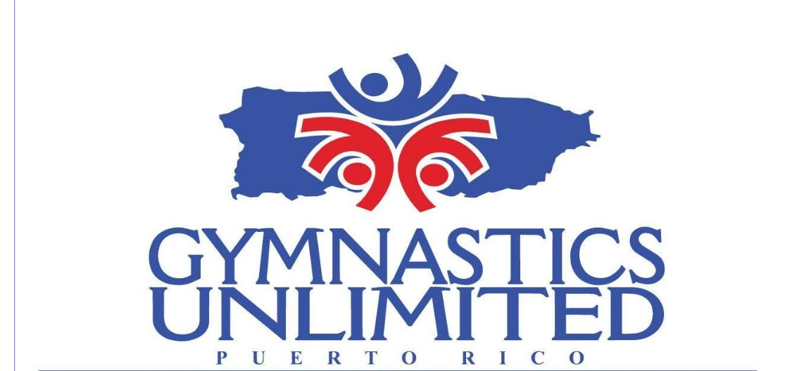
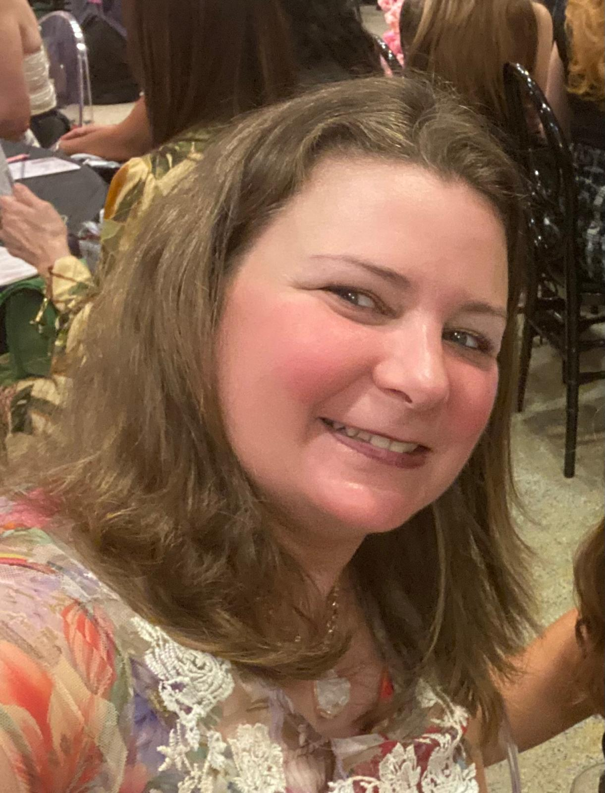

Women's FIG Academy Level 3
Certificación internacional completada en Cúcuta, Colombia.

Gymnastics Unlimited PRAñasco y Hormigueros, PRHead Coach y presidenta
Entrenadora bilingüe con formación internacional, experiencia competitiva y más de dos décadas dirigiendo Gymnastics Unlimited en Puerto Rico.

Credenciales
Certificación internacional completada en Cúcuta, Colombia.
Formación avanzada en Lima, Perú.
Formación inicial FIG en Buenos Aires, Argentina.
Universidad de Puerto Rico, Recinto de Mayagüez.
Certificación de entrenadora personal y maestra del Departamento de Educación de Puerto Rico.
Trayectoria
Como presidenta y Head Coach, Laura crea planes de clase, entrena estudiantes de todas las edades, prepara atletas para competencias regionales, estatales y nacionales, mantiene prácticas seguras y coordina programas con entrenadores de baile y cheerleading.
Ha llevado atletas a eventos en Florida y Costa Rica, incluyendo Magical Classic, Arabian Nights Invite, Gasparilla Classic y Campeonato Internacional Estrellas Gimnásticas.
Trabajó con niños con impedimentos visuales en CAAMP Abilities y con niños con necesidades especiales en Centro Espibi. También fue entrenadora física en un programa federal de salud del Departamento de Salud de PR.